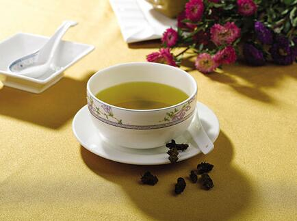

在日常生活中，可能有不少人都有过这种体会，时感乏力，稍活动一下就出现心慌、气促、易出汗，稍不留意就会感冒，而且一旦感冒了，症状往往就非常重，常需挂点滴才能缓解。在闷热的天气里，只要在相对封闭一点的环境里呆的时间稍长一点，就会出现头昏、胸闷、心慌、气促等不适，更有甚者，即便是在寒冷的冬天，这种情形也时有发生。但这些症状虽然明显，却往往不需用药，只需改变一下环境，换到一个通风的地方，症状即可自行缓解，虽也曾做过多项检查，却无一异常发现。西医对此情况往往难以做出明确诊断，治疗起来亦感非常棘手，而中医对此则无论是解释抑或是治疗都可谓是得心应手。
那么，具有以上情形的人是不是就非得上医院治疗不可呢？是不是就非得买回大包小包的中药来煎熬呢？非也。有一种非常简便易行的方法，只需去附近的中药店买点生黄芪回家，每次用15克泡水代茶饮，20天为一疗程，一般一疗程即可见效。上述方法我是通过自己的亲身治疗经历得来的。那还是五六年前，我还是一个医学院校的学生，遇上一个病号叙述他时常会感到乏力、易疲劳、好出汗、极易感冒，且在人数众多的场合，即便是门窗洞开，只要时间稍长一点，就会出现心慌胸闷，非得去室外呆一会才能缓解，真是深受其苦！我翻阅书本试着用生黄芪泡水代茶饮。没想到大约坚持喝了20天左右，上述情形基本上就没有再发生过。乏力、易疲劳症状明显改善，感冒亦很少发生，即便是偶尔不慎感冒了，症状亦甚轻微，往往不需用药或用很少量的药即可痊愈。走上临床后，曾遇到不少有类似情况的病人，经我建议后试饮黄芪茶，据反映此法确实非常有效。随着临床实践的逐步深入，我发现黄芪茶的应用远非如此，在一切伴有乏力、易疲劳等虚弱症候的疾病治疗中，均有辅助作用。
单味黄芪为什么会有如此神奇的疗效呢？这要从两个方面来阐述。首先，从发病机理来看，所谓“邪之所凑，其气必虚”，而此证则多属肺气虚弱。肺主气，司呼吸，主管发散和肃降，即具有宣发卫气和输精于皮毛的功能。现肺气虚弱，则其功能减弱，导致卫表不固，抵御外邪侵袭的功能下降，故在遭受外邪侵袭时，极易发病，具体可表现为乏力、易感冒、心慌、胸闷等不适症状。而黄芪性甘温，归肺经，有补气升阳、益卫固表之功能，饮用黄芪茶，即可达到补肺气、固肌表的目的，使得肺司呼吸、主宣发的功能正常，抵御外邪侵袭的功能增强，从而达到治病强身的目的。
其次，从黄芪的药理作用来看，黄芪一方面能促进骨髓细胞的分化，促进红、白细胞的生成，使血液中白细胞总数及多核白细胞显着增加，可明显提高人体的免疫力。另一方面，能改善人体的新陈代谢，有强心、抗衰老的作用。黄芪对多种细菌和病毒还有直接或间接的杀灭能力。所以饮用黄芪茶，可明显地增强体质，提高人体的免疫力，达到“有病治病，无病强身”的目的。正因其有治病强身的功能，故将黄芪茶又称作“黄芪健身茶”。
当然，任何药物都有其适应证和禁忌证。黄芪既属于药物，则必然有其适应证和禁忌证。所以在选择服用“黄芪健身茶”时，需注意以下几点：1、确实属于虚弱症候。2、非感染病急性期（如同时伴有典型虚弱症状者除外）。3、无实热证象（如有则需在“黄芪健身茶”中加入适量菊花、金银花等药性清凉的药物）。总之，“黄芪健身茶”可以随病情变化而适当加入一些相关药物，只要运用恰当，定可收到良好的疗效。黄芪不仅是补药更能养生黄芪是大家所熟悉的一味中药，几乎所有的人都知道它是一味补药，能治一些虚弱的。其实它在治病的同时，还有着很好的养生的作用。下面就让我为大家介绍一些黄芪吧：黄芪别名：王孙、黄耆、戴糁、戴椹、独椹、蜀脂、百本、百药绵、绵黄耆、绵耆、绵芪、箭芪。黄芪作为中药性味归经：味甘、性微温，归脾、肺经；功效：入气分，可升可降；具有补气升阳，固表止汗，行水消肿，托毒生肌的功效；用于：内伤劳倦，神疲乏力，脾虚泄泻，肺虚喘嗽，胃虚下垂，久泄脱肛，阴挺，带下，吐血，便血，崩漏，表虚自汗，盗汗，水肿，血盖，痈疽难溃或溃久不敛。使用提示：内服：煎汤，10～30g（大剂量120克）；或入丸、散、膏剂。1、补气升阳宜炙用；益卫固表、行水消肿、托毒生肌宜生用。2、气虚体弱，倦怠乏力，食少懒言者，宜与人参或党参相须为用。3、若脾虚食少，便溏或泄泻者，可与白茯苓、薏苡仁同用。4、体弱表虚，肌表不固之自汗，及虚人易感风邪者，宜与防风、白术同用。注意事项：凡表实邪盛气滞湿阻食积内停阴虚阳亢及痈疽初起不宜使用。黄芪这药是一个常用的补气药，补而不燥，在中医界有“十药九芪”的说法，可见黄芪是用量最大的中药之一。黄芪不仅可以用于治疗疾病，而且用黄芪补益身体也是很好的选择。古人在《冷庐医话》中就有“黄芪粥”的记载。方法是：选用优质黄芪30-60克，加水适量，煎取浓汁去渣后，加入粳米2两、红糖少许，继续煮至粥快熟时，再加入陈皮末1克，煮沸片刻即可。早晚服食，可健脾养胃，补益元气。另外还有黄芪煨大枣，黄芪煮黑豆，则更是补益上品。常服可令人精神焕发，体质增强，养颜润肤，延年益寿。